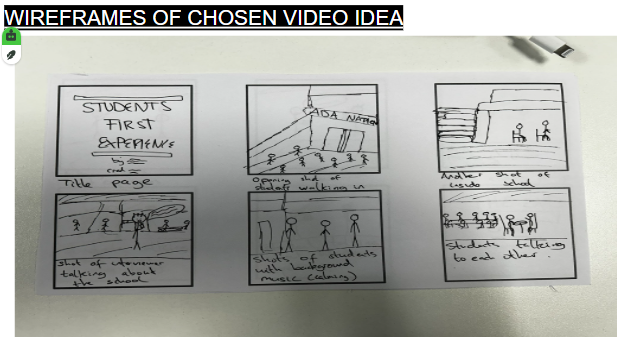
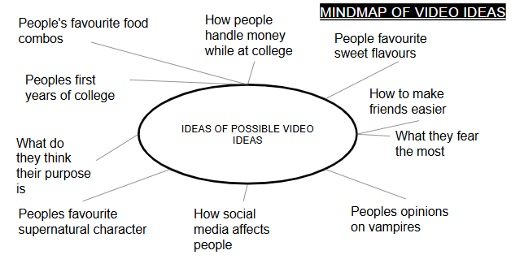

Unit 7 - Digital Media

This unit explores how digital media is created, edited and shared.
Evidence

Assignment Evidence
Download SlideshowReflection
I enjoyed this unit as I got to learn how to use different software to create digital media. I found it interesting to learn about the different types of digital media and how they can be used in different ways. I also enjoyed learning about the different techniques for creating and editing digital media, such as using layers and masks in Photoshop. Overall, I found this unit to be very informative and enjoyable.